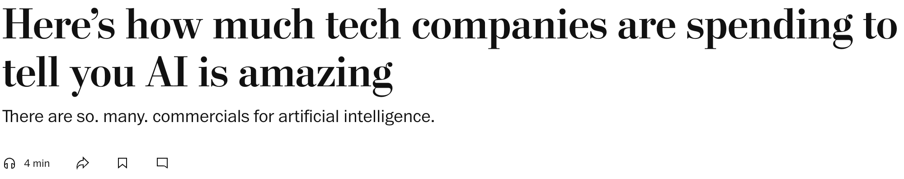
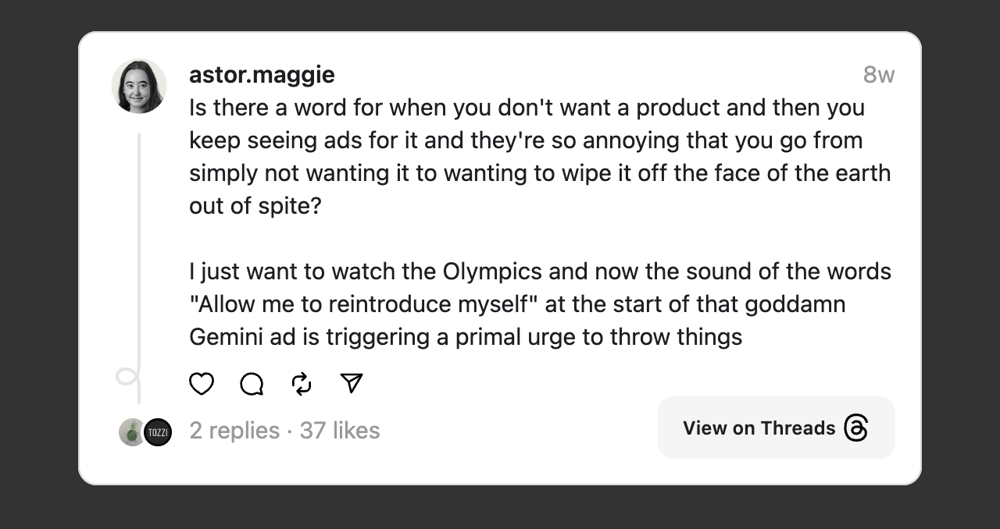

If you watched the Olympics, you probably saw the commercial for Google’s artificial intelligence that blared a Jay-Z song.
Maybe you saw a different Google AI ad, featuring comedian Leslie Jones. Or the one with a dad asking Google’s AI chatbot to help his daughter write a fan letter. (It faced criticism and was yanked.)
Have you seen actor Matthew McConaughey in a cowboy hat pitching Salesforce AI? The ad hyping Meta’s AI chatbot? Did you hear an AI sound-alike of TV broadcaster Al Michaels reading promotions for Microsoft Copilot AI?

Samsung is advertising on TV and online-boasting about the AI options for its phones. Amazon is pitching its AI for businesses. (Amazon founder Jeff Bezos owns The Washington Post, where you might see a tech company’s AI ad right now.)
Even the “Brat” musician Charli XCX showed off a Google AI feature in a recent music video.
It might be Brat Summer, but it’s definitely AI promotional blitz summer and year. (I will imprison myself for that corny line.)
Advertising is a common way to introduce you to new products. But if AI is supposed to be so amazing, why are tech companies trying so hard to persuade you it’s great?
Whyyyyy are there so many AI ads?
Technology companies analyzed by TV measurement firm iSpot spent about $196 million this year through Aug. 8 on TV commercials that were about AI in some way. That was nearly half of their total spending on national TV commercials this year, iSpot said.
AI promotional ads on TV and online spiked in the past couple of months, especially during the Olympics, for Meta, Google, Microsoft and other tech companies, according to iSpot and market intelligence firm Sensor Tower.
 One example: In the first 10 days of August, which included the Paris Games, roughly half of all of Meta’s streaming video or online advertising was for its AI chatbot, Sensor Tower estimated.
One example: In the first 10 days of August, which included the Paris Games, roughly half of all of Meta’s streaming video or online advertising was for its AI chatbot, Sensor Tower estimated.
Media industry analyst Brad Adgate cited two reasons for the AI advertising surge. First, “it’s a new and competitive product category,” he said, and that tends to spark advertising duels for supremacy, as it has before with rival soda brands, beer and sports betting sites.
“This is just the latest iteration of that, with artificial intelligence companies trying to get on the radar of consumers,” Adgate said.
Second, he said the Olympic Games were a unique moment when many Americans were paying attention. That made those weeks ideal to advertise to large numbers of people.
Augustus Cook at advertising agency R/GA Americas, which helped work on marketing for Google’s “circle to search” AI feature, said he sympathized with people who feel deluged with AI-related ads.
The challenge for technology companies and marketing executives, Cook said, is to show specific examples of how AI can help in our lives or work and why one company’s AI is different and better than another’s.
“You can have the best technology, but unless you’re able to win people over,” Cook said, “it’s an uphill battle.”
Most of the companies mentioned here declined to comment or didn’t respond to questions. Adam Forrest, Salesforce senior vice president for global campaigns and sports marketing, said the company’s advertising helps show “the practical everyday ways our AI is helping employees and consumers.”
The evolution from ‘I hate advertising’ to embracing ads
It wasn’t so long ago that many Silicon Valley companies considered it gauche to promote themselves with conventional advertising. There were exceptions, including Apple’s iconic ad campaigns, but the general thinking was the products were so good they could sell themselves.
But as technology went mainstream, companies’ promotional tactics did, too.
Tech companies “are now among the world’s largest brand advertisers,” said Brian Wieser, who is with the advertising research and consulting firm Madison and Wall.
(An example of brand advertising is a commercial with a smiling couple driving, say, a Hyundai through the mountains so you’ll feel warm and fuzzy about the company next time you need a new car. That type of advertising made TV the world’s dominant marketing force — until data-driven ads like those on Google, Facebook and Amazon took over.)
Even Tesla, the car company run by Elon Musk — who once proclaimed he hated advertising — has been buying some ads recently. Tesla didn’t respond to a request for comment.
The timing of tech companies’ AI advertising surge is awkward. Recently, investors have grumbled that tech companies are spending too much on their AI products without enough of a financial payoff.
And in a twist, OpenAI — the unconventional company most responsible for kicking off the current AI mania with its ChatGPT and Dall-E — is sitting out the AI ad wars.
OpenAI does not advertise.